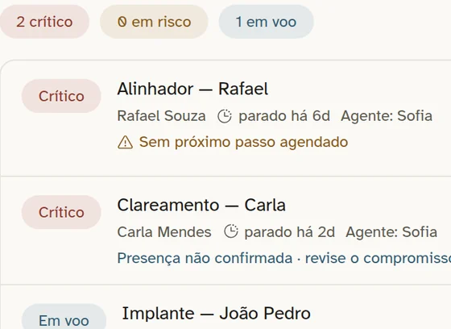
Sem resposta
O cliente espera, perde o timing e procura outra empresa.
A TOTH reúne WhatsApp, Instagram, Facebook, funil de vendas, follow-ups e agentes de IA em uma única operação. Cada contato entra no processo certo, recebe resposta e avança com contexto.

A cena que muda a venda
Sem sistema, ele espera. E amanhã pode ser tarde. Com a TOTH, a conversa recebe a resposta certa, o negócio entra no funil e, se o cliente sumir, o sistema pode retomar no momento definido.
Veja funcionando
Você investe para gerar conversas. Mas, quando o contato entra no WhatsApp, o processo passa a depender de memória, planilhas e mensagens espalhadas.
Uma falha parece pequena. Repetida todos os dias, ela vira receita perdida.

O cliente espera, perde o timing e procura outra empresa.
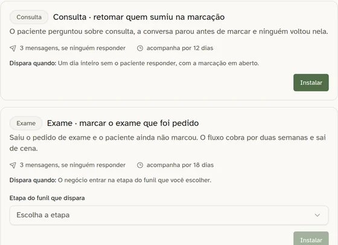
A conversa começou, mas ninguém lembrou de retomá-la.
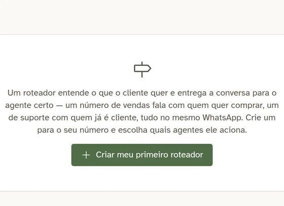
Duas pessoas respondem — ou ninguém assume.
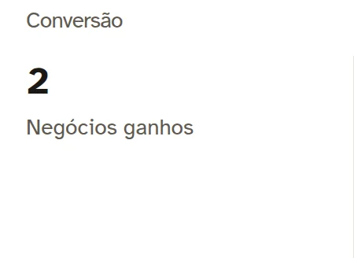
O gestor descobre a perda quando a oportunidade já esfriou.
WhatsApp, Instagram, Facebook, formulário, anúncio ou prospecção.
Registra origem, distribui o atendimento e abre a oportunidade no funil certo.
Responde com informações aprovadas e chama uma pessoa quando necessário.
Follow-ups retomam quem parou, dentro das regras e horários definidos.
Histórico, contexto e próxima ação aparecem sem o cliente repetir tudo.
Tempo de resposta, avanço, origem e perdas ficam disponíveis para decisão.
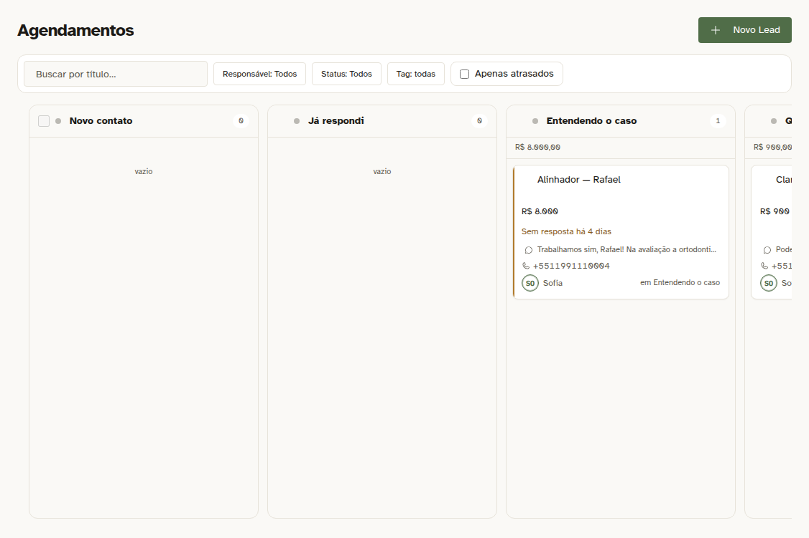
Não se trata de colocar mais uma ferramenta na equipe. Trata-se de deixar claro quem atende, quem acompanha e qual é o próximo passo.
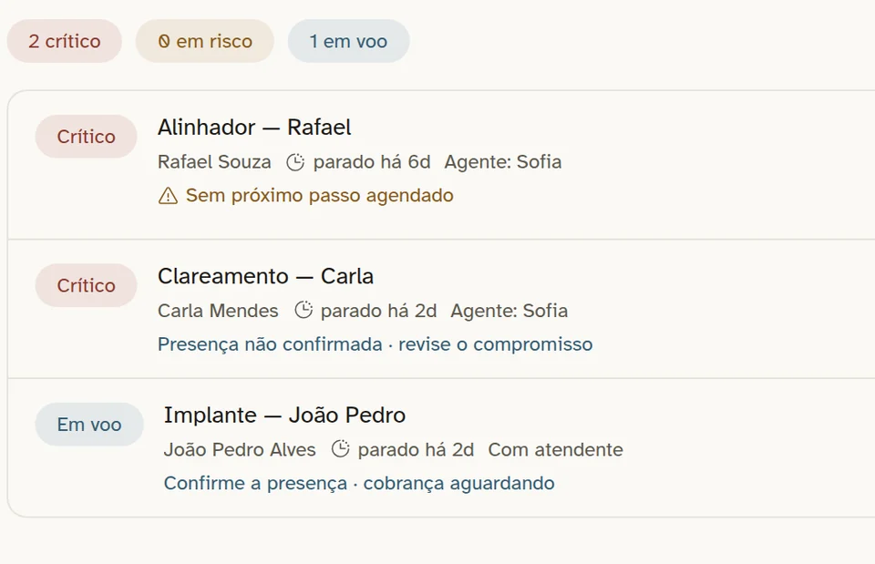
Reúna canais, distribua conversas e identifique rapidamente quem ainda espera uma resposta.
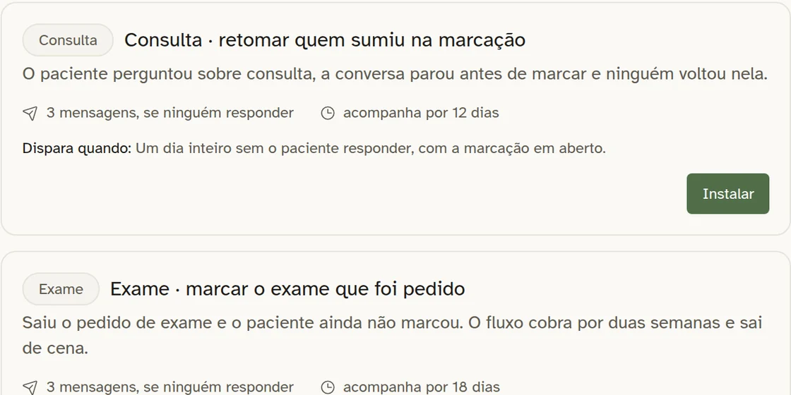
Programe retomadas e deixe o sistema mostrar quem está esfriando antes que seja tarde.
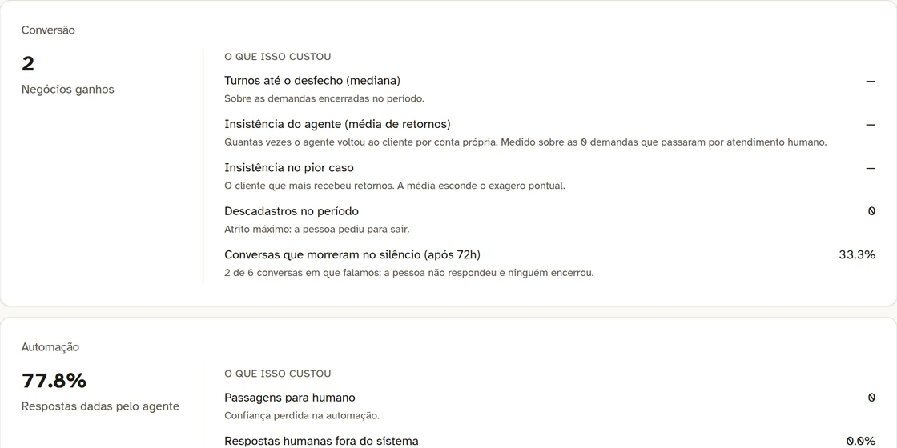
Veja tempo de resposta, gargalos, perdas e o custo real da operação humana e automática.
Um chatbot comum responde e encerra. A TOTH conecta a conversa ao CRM, ao próximo passo e à pessoa certa.
Conhecer os agentes de IA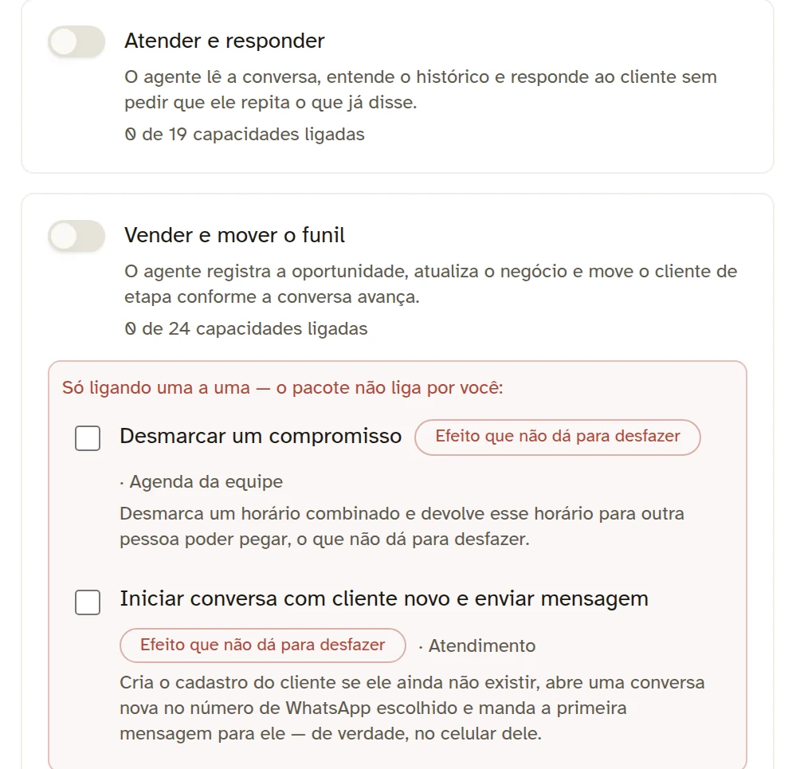
Você define quando a IA responde, o que ela consulta e quais ações pode executar.
A proposta não é substituir a equipe. É impedir que ela perca tempo com repetição e clientes por falta de acompanhamento.
Tudo conectado
Canais, agentes de IA, funil, agenda, propostas, follow-ups e métricas giram em torno de um só centro: a conversa com o cliente.
Funis, formulários, páginas, agenda, propostas, catálogo e integrações podem ser adaptados ao escopo de cada operação.
Consultar uma integração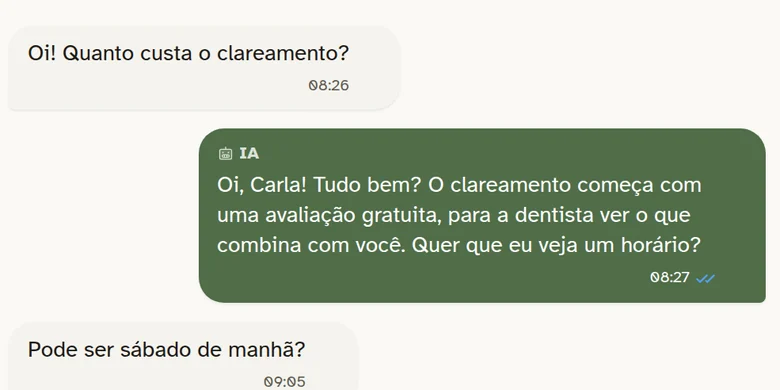
Entram contatos todos os dias por WhatsApp ou redes sociais.
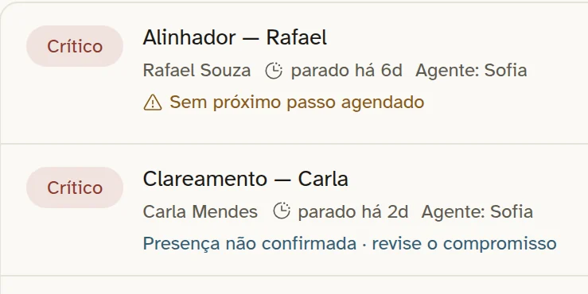
Mais de uma pessoa participa do atendimento.
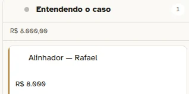
O processo comercial tem etapas, retornos e responsáveis.
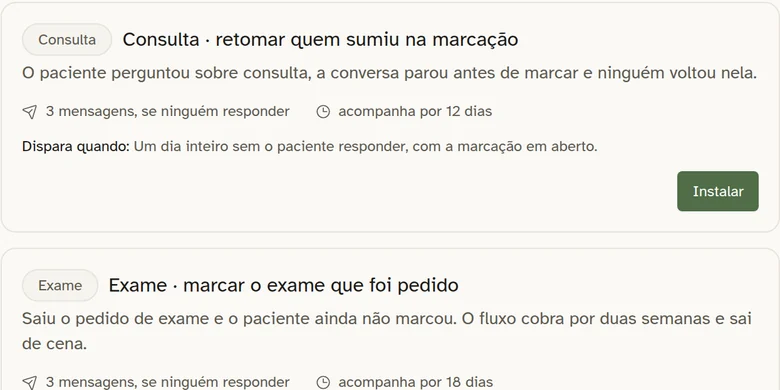
Oportunidades esfriam por falta de acompanhamento.
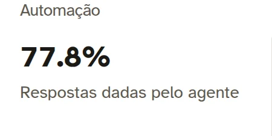
A empresa investe em anúncios ou prospecção e precisa medir retorno.
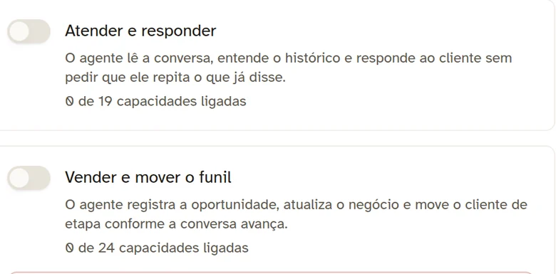
O negócio quer aplicar IA sem perder o controle da operação.
Mapeamos canais, equipe, processo e pontos de perda.
Preparamos ambiente, funil, agentes, base e follow-ups conforme o plano.
Testamos cenários reais antes de liberar a operação.
Os dados mostram o que precisa ser ajustado com o uso.
Todos os planos incluem o sistema hospedado e atualizado. O que muda é o nível de configuração e acompanhamento.
Para quem quer usar a estrutura da TOTH e fazer a própria configuração.
Para quem quer receber a operação configurada e validada.
Para quem quer configuração inicial e evolução contínua da operação.
Consumo de IA, API oficial do WhatsApp, Google, Meta, e-mail e outros fornecedores são cobrados separadamente. Condições e limites finais são confirmados na proposta.
Veja um contato chegando, a IA respondendo, o negócio entrando no funil e a equipe assumindo com contexto.
Agendar demonstração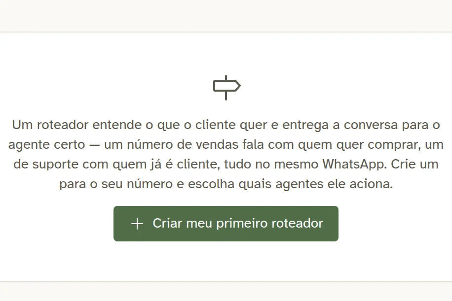
Se a sua dúvida depende do seu processo ou de uma integração específica, avaliamos na demonstração.
Não. Ela reduz tarefas repetitivas, organiza o atendimento e ajuda a acompanhar oportunidades. Sua equipe continua responsável pelas decisões, negociações e situações que exigem análise humana.
Somente dentro das permissões configuradas. É possível testar antes de liberar, limitar informações e ações, definir custos e transferir conversas para pessoas.
Sim. A TOTH aceita múltiplos números e pode separar atendimento, agentes e regras por número ou por assunto.
Sim. As mensagens podem chegar ao mesmo Inbox usado pela equipe e pelos agentes de IA.
O funil pode usar as etapas, campos e regras do seu processo. Integrações externas são confirmadas durante o diagnóstico.
Conexões não oficiais sempre envolvem risco. A TOTH oferece controles de ritmo, horário e teste para reduzi-lo e também pode trabalhar com a API oficial do WhatsApp.
Consumo de IA, API oficial do WhatsApp, serviços de e-mail e contas de outros fornecedores são cobrados separadamente, conforme o uso e a solução escolhida.
Veja a TOTH funcionando com uma operação parecida com a sua.
Quero uma demonstração